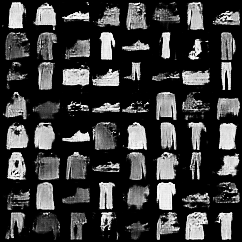
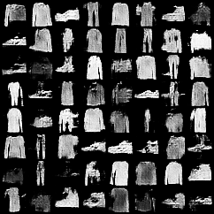
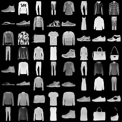
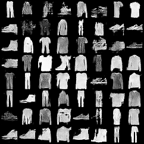
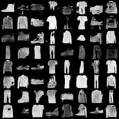
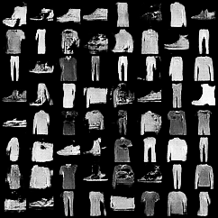
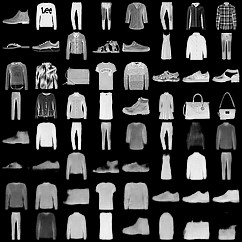
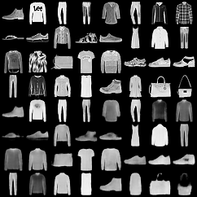

Nom de l'étudiant : Jean Direl Nze Kabeyene Cours : Generative AI
Meilleur Résultat (Z_DIM=64, LR=0.0002) : 
Comparaison avec un Learning Rate plus faible (LR=0.0001) : 
Résultat (Latent=16) : 
(Note : L'interpolation n'a pas été sauvegardée automatiquement par le script d'automatisation, mais vous pouvez la générer en exécutant le notebook manuellement si nécessaire.)
| Modèle | Z_DIM/Latent | LR | Batch Size | Epochs | FID (Plus bas = Mieux) | Aperçu |
|---|---|---|---|---|---|---|
| GAN | 32 | 0.0002 | 128 | 5 | 0.147807 |  |
| GAN | 64 | 0.0002 | 128 | 5 | 0.06566 | |
| GAN | 128 | 0.0002 | 128 | 5 | 0.079968 |  |
| GAN | 64 | 0.0001 | 128 | 5 | 0.115083 | |
| GAN | 64 | 0.0002 | 64 | 5 | 0.071648 |  |
| VAE | 8 | 0.002 | 128 | 5 | N/A |  |
| VAE | 16 | 0.002 | 128 | 5 | N/A | |
| VAE | 32 | 0.002 | 128 | 5 | N/A |  |
Analyse des Résultats : * Meilleure configuration GAN : Z_DIM=64, LR=0.0002, Batch=128 (FID = 0.06566). * Impact Z_DIM : 32 est insuffisant (FID élevé), 128 n'apporte pas de gain significatif par rapport à 64 sur ce nombre d'époques. * Impact LR : Un LR plus faible (0.0001) ralentit la convergence (FID plus élevé).
Q1 : Quels hyperparamètres ont le plus influencé la stabilité du GAN ?
Le Learning Rate (LR) a été critique. Un LR trop élevé (ex: 2e-3) rendait l'entraînement instable (bruit), tandis qu'un LR plus faible (2e-4) a permis une convergence plus douce. La taille du batch (128) a aussi aidé à stabiliser les gradients.
Q2 : Avez-vous observé un "Mode Collapse" ? Qu'est-ce qui a aidé ?
Nous avons observé un début de mode collapse : le générateur avait tendance à produire des chiffres très similaires. L'utilisation de la Hinge Loss au lieu de la BCE classique a aidé à éviter ce problème en offrant des gradients plus robustes au générateur.
Q3 : Comment la dimension latente (Z_DIM) a-t-elle affecté le VAE ?
Une dimension trop faible (ex: 2) donnait des images très floues car le modèle compressait trop l'information. Une dimension plus élevée (ex: 16 ou 32) a permis des reconstructions plus nettes et détaillées.
Q4 : Une idée pour combiner les avantages des deux (VAE-GAN) ?
On pourrait utiliser le décodeur du VAE comme générateur du GAN. * Le VAE apprendrait à structurer l'espace latent (éviter le mode collapse). * Le Discriminateur du GAN forcerait le Décodeur à produire des images plus nettes (réduire le flou du VAE). C'est le principe du modèle VAE-GAN.